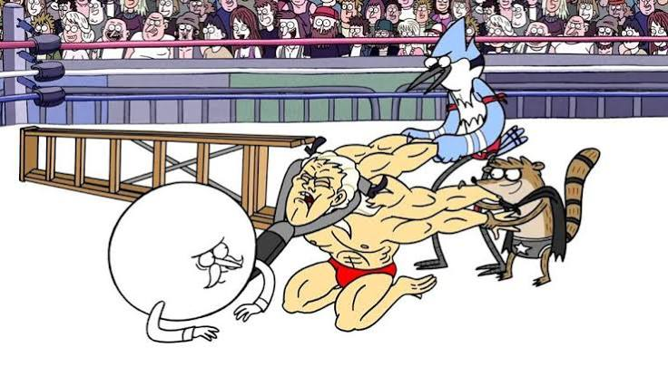

Musculoso ganha o Torneio de Fisiculturismo

Com uma jogada insana e fatal em caso de erro, Musculoso garante a
vitória em cima de um fisiculturista arrogante, impressionando a
todos que não acreditavam nele.
Mas qual o movimento que era tão fatal assim?

O movimento em si se chama "O detonador" ou "The Death Dump", onde o
erro leva a explosão súbita do usuário.
No caso, Mitch
Sorrenstein acerta o movimento com perfeição, garantindo a vitória
por cima do Bambã (Principal rival dele na disputa), após uma aposta
para poder jogar Ping Pong na academia.
Pairulito vence torneio de luta livre

Confundido com o lutador daquela noite, o Cabeção. Mesmo sendo um
lutador surpresa (e ele só queria assistir a luta), Pairulito quebra
as expectativas e vence a Luta Livre.
E como foi possível Pairulito ser campeão?

No caso, Pairulito estava com as costas machucadas por Mordecai e Rigby no mesmo dia, porém, com um golpe de um dos adversários, a coluna do Pairulito volta no lugar, revelando o próprio sem restrições.
Com uma luta empolgante de movimentos e golpes totalmente profissionais por parte do Pairulito Maellard, que humilha os 3 adversários: o Doutor Destruição e O Quebra-Ossos, 2 mutantes (um tinha quatro braços, outro cuspia fogo e outro tinha aparência repitiliana. Todos com força sobrenatural). Mas calma, Pairulito teve a ajuda de Mordecai e Rigby no ringue.